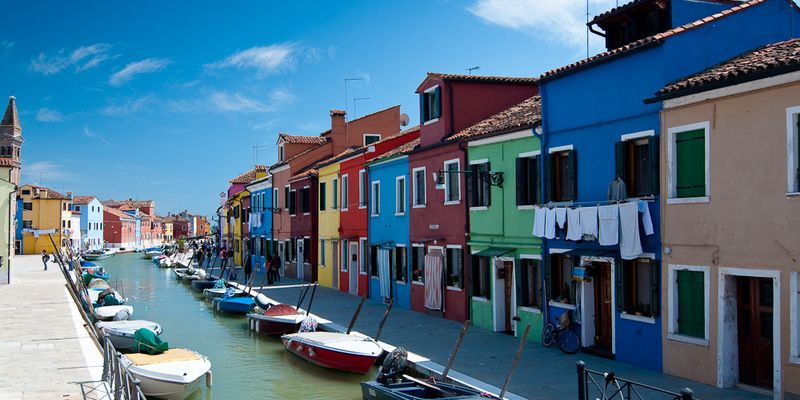
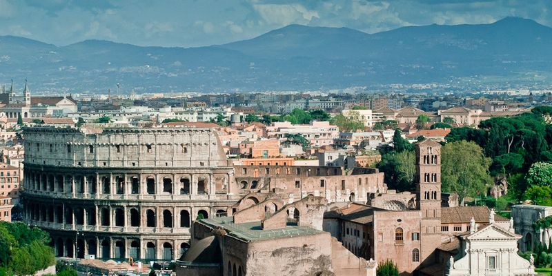
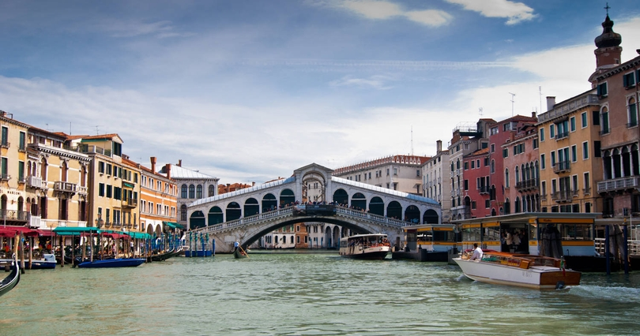
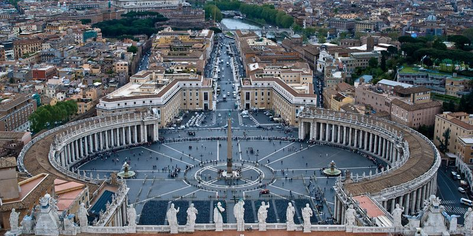
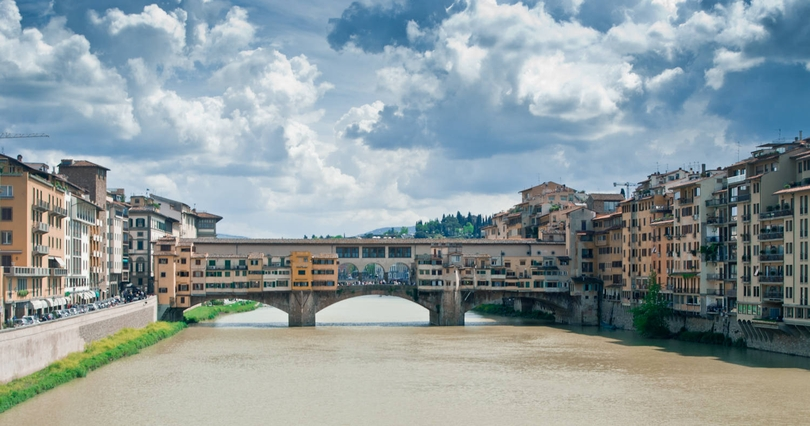
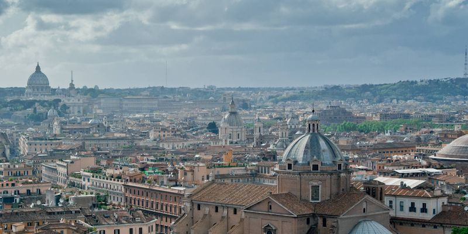
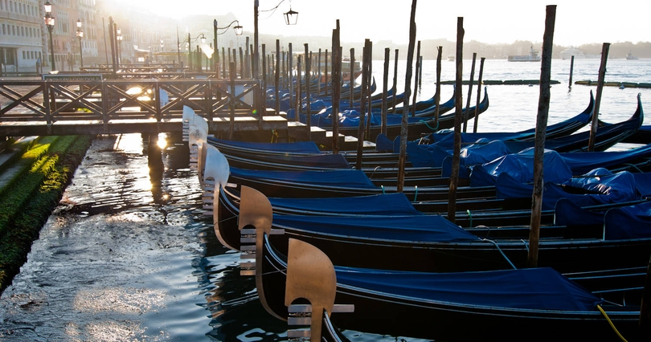
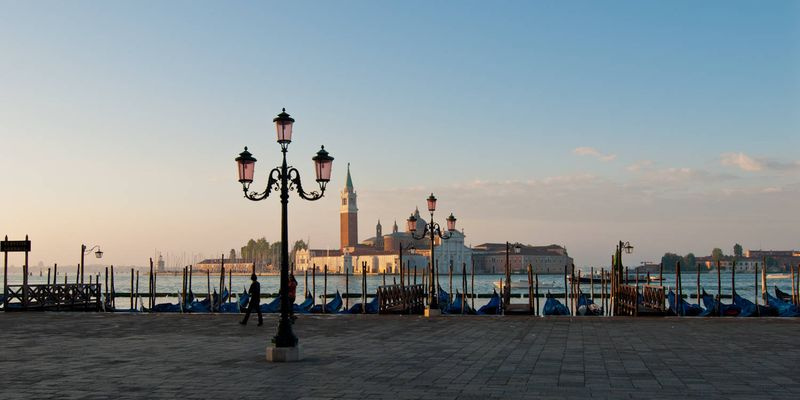
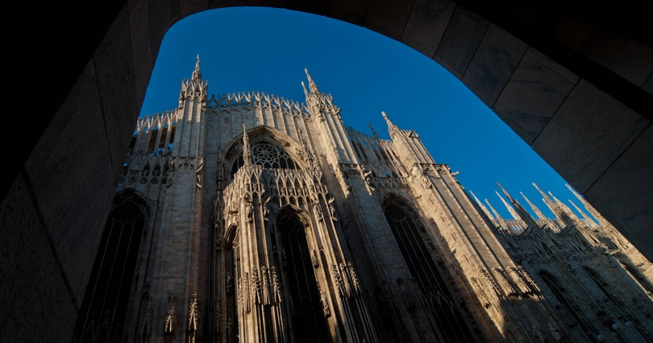
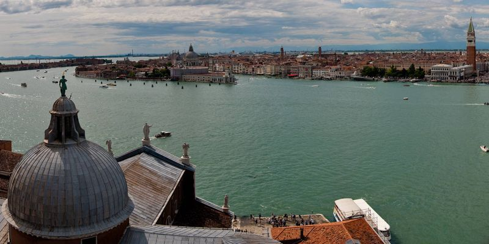

FotoFlow Slider - jquery-плагин
лицензия
скачать
документация
Меняя настройки слайдшоу можно получить различные эффекты
Тип элементов
Квадраты
Полоски
Окружности
Весь слайд
Начальное состояние элемента
Масштаб:
1.0
∧
∨
Круг
Размер элементов
Маленький
Средний
Большой
Направление эффекта
Слева направо
Сверху вниз
Из левого верхнего угла
Случайно
Задержка между слайдами
3 сек.
5 сек.
7 сек.
10 сек.
Показать шкалу
Замедление скорости эффекта
Коэффициент:
1.0
∧
∨
Добавить неравномерность
Пример элементов управления
Назад
Старт
Пауза
Вперёд
         
Фотографии Италии взяты с сайта
ItalyPhotos.Ru